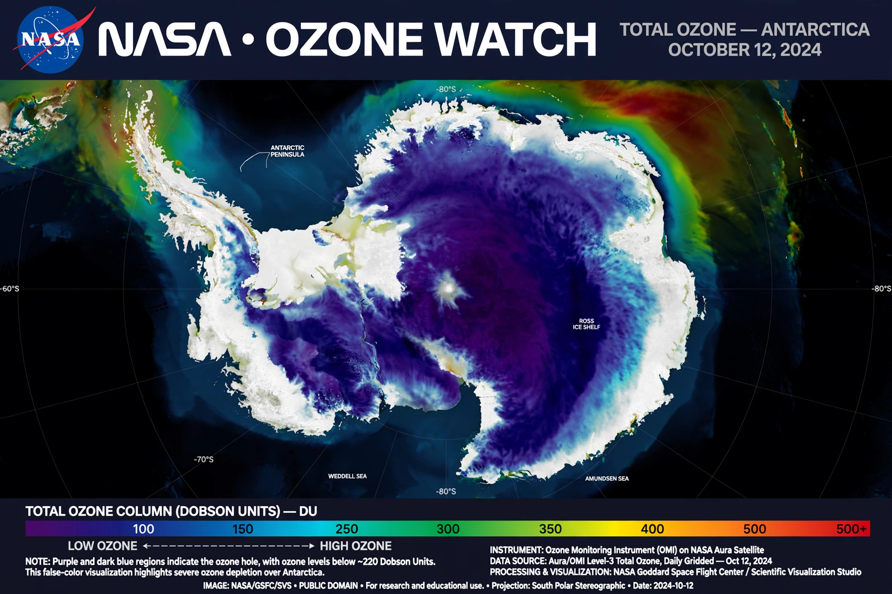

| Ozone hole | |
|---|---|
| Location | Stratosphere over Antarctica (and smaller Arctic depletion) |
| Cause | Chlorofluorocarbons and other ozone-depleting substances |
| Discovered | 1985 (Farman, Gardiner and Shanklin) |
| Peak extent | ~29.9 million km² (September 2000) |
| Response | Montreal Protocol (1987) |

The ozone hole is an annual thinning of Earth's stratospheric ozone layer over the Antarctic, and to a lesser extent the Arctic, caused mainly by manufactured chemicals — especially chlorofluorocarbons (CFCs) — that release chlorine and bromine into the stratosphere. The largest recorded Antarctic hole covered about 29.9 million square kilometres in September 2000.
In the extreme cold of the polar winter, polar stratospheric clouds form and convert stable chlorine reservoirs into reactive forms. When sunlight returns in spring, catalytic cycles involving chlorine monoxide destroy ozone rapidly — a single chlorine atom can destroy over 100,000 ozone molecules. The result is that each September–November, ozone over Antarctica falls by as much as 60 percent before the vortex breaks up.
In 1974 Mario Molina and F. Sherwood Rowland predicted that CFCs could damage ozone, work later recognised with the Nobel Prize in Chemistry. In 1985 Joe Farman, Brian Gardiner and Jonathan Shanklin of the British Antarctic Survey published ground-based Dobson measurements from Halley Bay showing spring ozone losses far larger than expected. Satellite data from NASA's TOMS instrument, initially set aside as implausible, confirmed the phenomenon.
The discovery spurred the Montreal Protocol (1987), which phased out CFCs and related substances worldwide and is often called the most successful environmental treaty ever. Atmospheric chlorine has since declined, and scientists project that the Antarctic ozone layer will return to 1980 values around the 2060s. The depleted layer raises ultraviolet radiation at the surface, increasing risks of skin cancer, cataracts and harm to phytoplankton.
This article was recreated from memory as part of a web-reconstruction exercise.